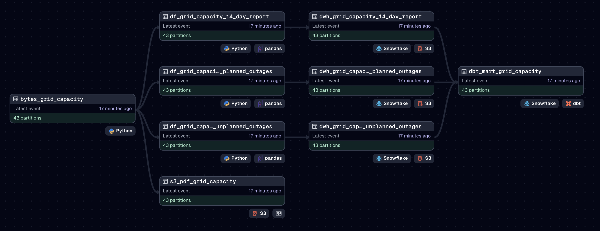

Grid Capacity Pipeline
Aug 2025 ~ Flo Energy
Length: 1mo (at 0.75 FTE)
Programming languages:
- Python (requests, base64, BytesIO, pdfplumber,
Pandas, datetime, pytz, re, Dagster)
- SQL (dbt)
Data: Daily byte-endcoded PDF reports from Electricity Market Company (EMC)
containing a table about planned and unplanned outages, alongside grid capacity tables
tracking supply and demand metrics at 30-minute intervals for the next two weeks

Problem description:
Automate a pipeline that fetches a byte-endcoded PDF report via API, parses multiple tables,
loads them into Snowflake via Amazon S3, and refreshes dbt models powering a Holistics
dashboard
Approach & Results:
The architecture of the pipeline is shown in the diagram below. A Dagster job with daily
asset partitions orchestrates the workflow, starting with a configurable Dagster resource
for the EMC API. This resource requests the byte-encoded PDF report via OAuth using a JWT
token. Next, the raw PDF is uploaded to Amazon S3 for archival, while at the same time the
15-page file is parsed with pdfplumber to extract multiple tables.
DISCLAIMER: Asset names have been modified to be more
generic to comply with company confidentiality requirements.

The three tables processed from the report are the 14-day grid capacity data at 30-minute intervals, planned outages of equipment, and unplanned outages. In parallel, each table is converted to a dataframe, with new features derived such as dates extracted from text columns using regular expressions. Enforced checks ensure correct processing before the dataframes are exported as JSON to Amazon S3 and loaded into raw Snowflake tables. These tables feed downstream dbt models which refresh the Holistics dashboard powering grid analytics.
DISCLAIMER: Numerical values in the Holistics charts have been redacted to comply with company confidentiality requirements.

A Dagster retry policy was implemented to handle API timeouts and parsing errors with up to two retries with one-minute delays between runs. The pipeline executes daily through Dagster's built-in scheduler with no manual intervention, delivering reliable grid capacity data needed for energy trading.